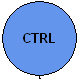
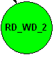
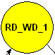
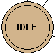
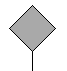

To access:
From the FSM List window, double-click the FSM you want to analyze.
From the Objects, Locals, Wave, or Code Coverage Analyze FSM Analysis windows, click the FSM button for the FSM you want to analyze.
Use this window to graphically analyze finite state machines in your design.
Analyze FSMs and their coverage data — You must specify +cover, or explicitly +cover=f, during compilation and -coverage on the vsim command line to fully analyze FSMs with coverage data.
Analyze FSMs without coverage data —You must specify +acc, or explicitly +acc=f, during compilation (vcom/vlog) or optimization (vopt) to analyze FSMs with the FSM Viewer window.
The FSM View menu becomes available in the Main menu when the FSM View window is active.
Graphical Element |
Description |
Definition |
|---|---|---|
 |
Blue state bubble |
Default appearance for non-reset states. |
 |
Green state bubble |
Indicates the FSMs current state, or the state of the wave cursor location (when tracking the wave cursor). |
 |
Yellow state bubble |
Indicates the FSMs previous state, or the state of the wave cursor location (when tracking the wave cursor). |
 |
Tan state bubble with double outline. |
Indicates a reset state. |
 |
Gray diamond |
Indicates there are several transitions to reset with the same expression. This is a placeholder to reduce the number of objects drawn in the window. You can view all common expressions by choosing:
|
Transition box |
Contains information about the transition,
|
|
Black transition line. |
Indicates a transition. |
|
Red transition line. |
Indicates a transition that has zero (0) coverage. |
1. The condition format is based on the GUI_expression_format operators, as described in Syntax and Conventions in the Command Reference Manual.
Popup Menu Item |
Description |
|---|---|
Transition |
Only available when right-clicking on a transition.
|
View Declaration |
Opens the source file and bookmarks the file line containing the declaration of the state machine |
Zoom Full |
Displays the FSM completely within the window. |
Set Context |
Executes the env command to change the context to that of the state machine. |
View Layout |
Allows you to choose the orientation of the window: horizontal or vertical. |
Hide Selected |
Allows you to hide the selected state or transition |
Unhide All |
Resets the view to show all hidden states or transitions. |
Add to … |
Adds information about the state machine to the specific window. |
Properties |
Displays the FSM Properties dialog box containing detailed information about the FSM. |
FSM View Menu Item |
Description |
|---|---|
Show State Counts |
Displays the coverage counts for each state in the state bubble. |
Show Transition Counts |
Displays the coverage counts for each transition. |
Show Transition Conditions |
Displays the condition for each transition. The condition format is based on the GUI_expression_format operators. (Refer to Syntax and Conventions in the Command Reference Manual for a description of the GUI_expression_format operators.) |
Enable Info Mode Popups |
Displays popup information when you hover over a state or transition. |
Transitions to “Reset” |
Controls the display of transitions to a reset state:
|
Options |
Displays the FSM Display Options dialog box, which allows you to control:
|